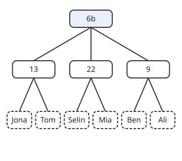
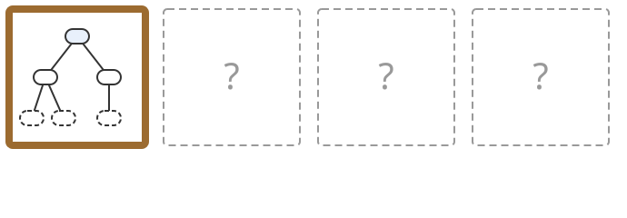

Das brauchst du hier
Mit einem KI-Tutor lernen
Ein KI-Tutor erklärt dir diese Seite und hilft dir bei den Aufgaben. Wähl deinen Assistenten:
Mit Claude öffnen Mit ChatGPT öffnen Mit Mistral Vibe öffnen
Du nutzt dein eigenes Konto beim Anbieter. Der Assistent ist kein Angebot von lernapps.net: lernapps liefert nur Inhalte und Aufgaben. Die Wahl gilt für alle Seiten, nur auf diesem Gerät.
Kannst du das schon?
Klassenchat 7b
Jona: Schaut mal, was ich gefunden habe: Frau Bergs Zimmerplan vom Seeberg, letztes Jahr in der 6b!
Mia: Haha, der Baum! Zimmer 22, Selin und ich.
Selin: Den brauchen wir bestimmt noch.
Jona, Selin und Mia sind 12 und gehen in die Klasse 7b. Frau Berg ist ihre Klassenlehrerin. Letztes Jahr, in der 6b, war die Klasse auf Klassenfahrt am Seeberg. In diesem Kapitel baust du Netze. Sie beginnen beim Baum. Prüfe dich kurz selbst:
- Baum als Datenstruktur: Ich kann hierarchische Informationen als Baum mit Wurzel, Knoten, Kanten und Blättern darstellen.
Der Zimmerbaum vom Seeberg

© CC-BY-4.0- Wurzel: der oberste Knoten, hellblau
- Kante: eine Linie zwischen zwei Knoten
- Knoten: ein Kästchen im Baum
- Blatt: ein Knoten ohne Knoten darunter, gestrichelt
Frau Bergs Zimmerplan als Baum. Die Zahlen 1 bis 4 zeigen die Teile des Baums.
Jeder Knoten außer der Wurzel hängt an genau einem Knoten darüber. Darum führt von der Wurzel genau ein Weg zu jedem Knoten, und ein Baum hat immer eine Kante weniger als Knoten.
Aufgabe
Lösung
genau einer richtige Antwort
Von 6b zu Zimmer 22, von dort zu Mia. Einen anderen Weg gibt es nicht.
zwei
Mia hängt nur an Zimmer 22, und Zimmer 22 nur an 6b. Ein zweiter Weg bräuchte eine weitere Kante.
drei
Drei Kanten gehen von 6b weg, aber nur eine führt zu Zimmer 22 und damit zu Mia.
Im Baum hängt jeder Knoten an genau einem Knoten darüber. Darum gibt es von der Wurzel zu jedem Knoten genau einen Weg.
Die Galerie beginnt

© CC-BY-4.0Die Galerie der Datenstrukturen. Der Baum hängt schon, die leeren Rahmen füllst du in dieser App.
Zu jeder Struktur der Galerie fragst du: Wie finde ich ein Element? Im Baum ist das leicht: Du gehst von der Wurzel aus nach unten, es gibt nur einen Weg. Aber was ist, wenn ein Weg im Kreis zurückführt? Das zeigt dir der Busplan auf der nächsten Seite.
Fehler gefunden oder eine Idee für diese App?